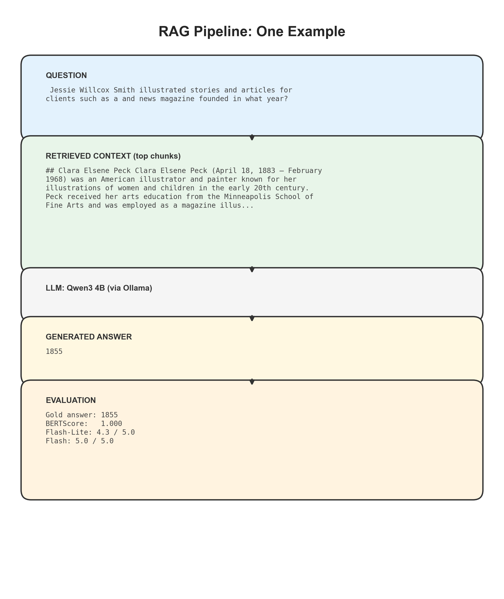
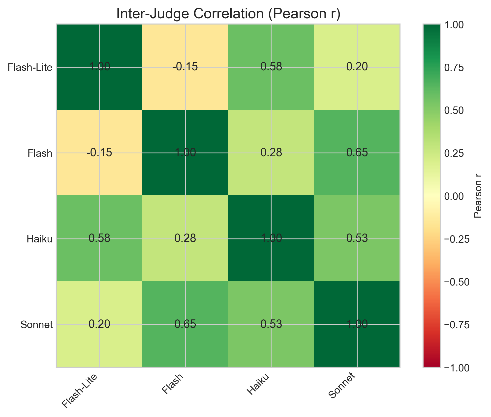
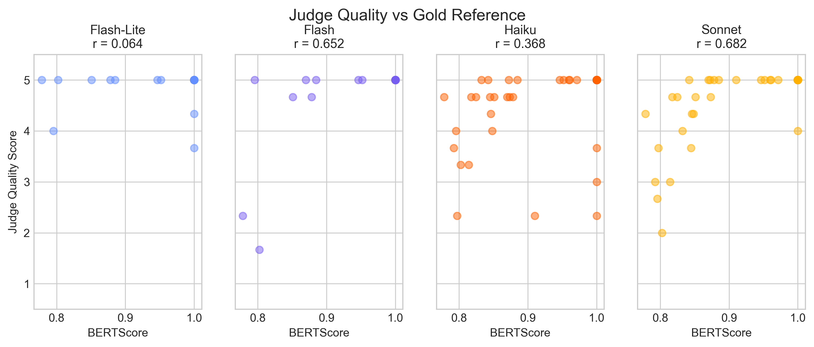
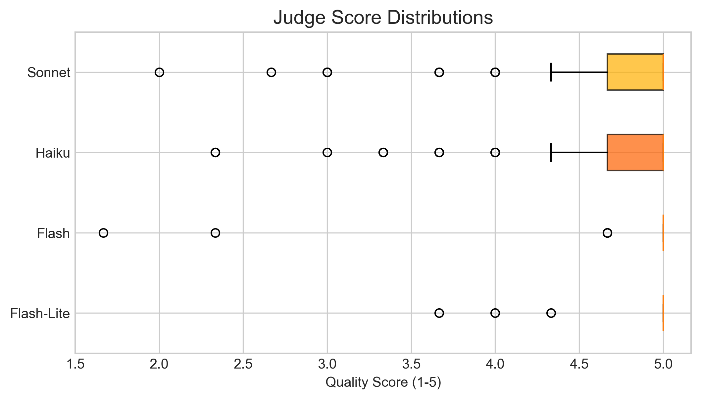
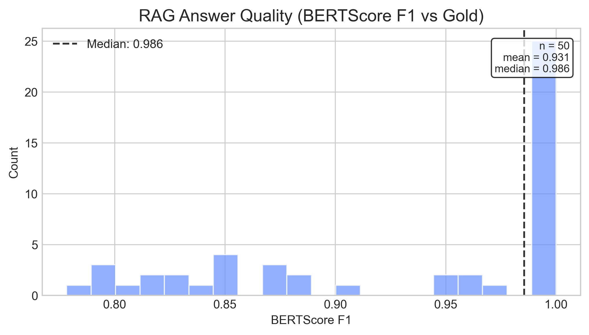

Auto-generated visualizations. Re-run python scripts/generate_visuals.py
to regenerate.

One example from HotpotQA showing each stage of the pipeline.

Pearson r between each pair of LLM judges on quality scores.

Each judge's quality score vs BERTScore (semantic similarity to gold answer).

Distribution of quality scores per judge. Wider spread = more discriminating.

Distribution of BERTScore F1 across all 50 examples.